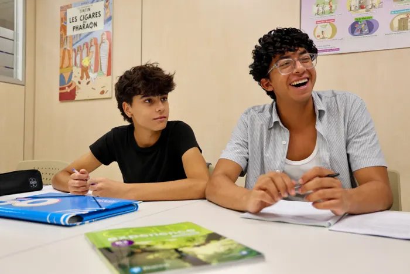
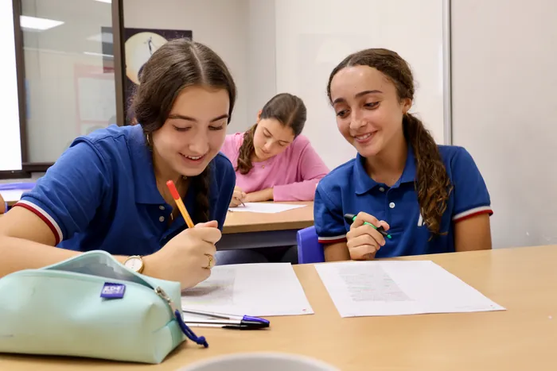
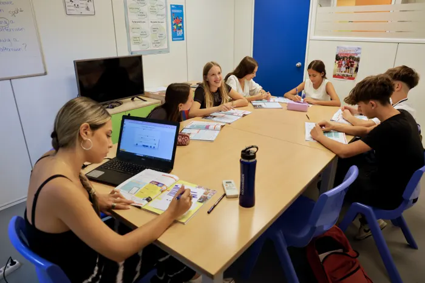
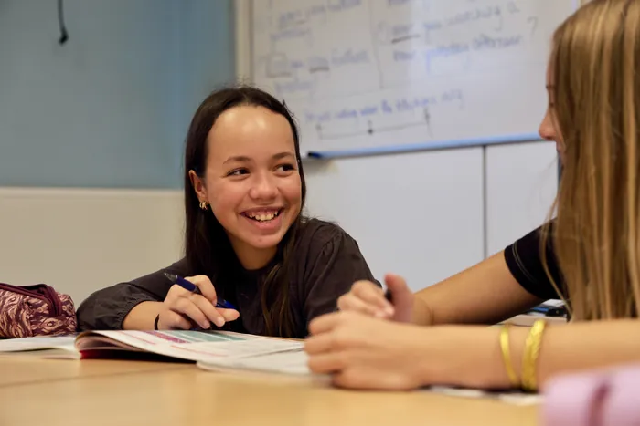
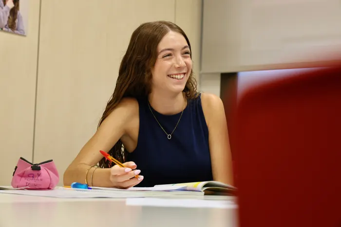
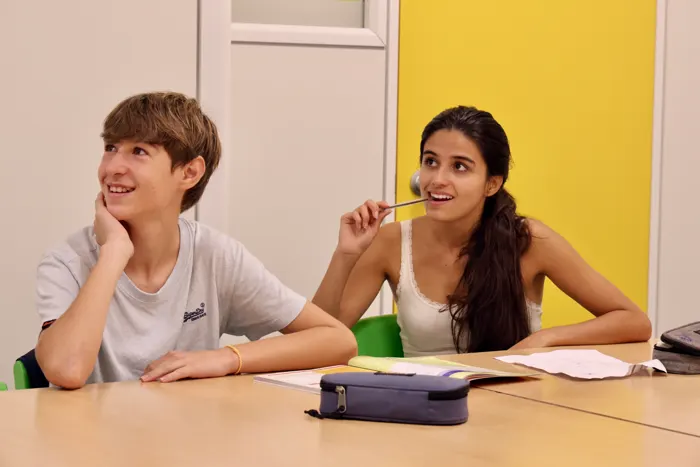

L'anglès que t'obre portes
Al departament de Teens, portem l'anglès un pas més enllà, guanyant fluïdesa, autonomia i confiança per comunicar-nos en situacions reals.
Un pas més en el teu anglès
Cada nivell, de Junior a Pre-First, permet consolidar coneixements i avançar progressivament cap a la preparació dels exàmens oficials de Cambridge.
- #01
Junior
A2 - #02
Level 2
A2+ - #03
Level 3
B1 - #04
Pre First
B1+ - Cambridgesegüent etapa →
Saps quin és el teu nivell d'anglès?
Descobreix quin nivell s'adapta millor als teus coneixements amb la nostra prova de nivell, gratuïta i sense compromís.
- 60 preguntes
- Gratuïta
- Sense compromís
Are you (espai en blanc)?
Com són les classes de Teens?
Formació adaptada als adolescents, orientada als exàmens oficials de Cambridge.
Grups reduïts
Classes de màxim 12 alumnes per garantir una atenció propera i fomentar la participació.
Classes de 75 o 90 minuts
Sessions d'1 hora i 15 minuts o d'1 hora i 30 minuts, segons el grup.
Orientació cap a Cambridge
Introduïm activitats i continguts orientats als exàmens oficials de Cambridge, preparant els estudiants per a la següent etapa.






Un cop d'ull a les nostres classes
Grups reduïts de màxim 12 alumnes.
Trobeu l'horari que us encaixi millor
Consulteu els horaris disponibles per a Junior, Level 2, Level 3 i Pre First.
| Nivell | Dies | Hora |
|---|---|---|
| Junior | Dilluns i dimecres | 16:15–17:30 |
| Junior | Divendres | 17:30–19:30 |
| Level 2 | Dilluns i dimecres | 16:15–17:30 |
| Level 2 | Dilluns i dimecres | 18:30–20:00 |
| Level 2 | Dimarts i dijous | 16:00–17:15 |
| Level 3 | Dilluns i dimecres | 16:00–17:30 |
| Level 3 | Dimarts i dijous | 15:45–17:15 |
| Level 3 | Dimarts i dijous | 17:45–19:15 |
| Level 3 | Divendres | 17:30–20:00 |
| Pre First | Dilluns i dimecres | 16:00–17:30 |
| Pre First | Dilluns i dimecres | 18:30–20:00 |
| Pre First | Dimarts i dijous | 15:45–17:15 |
| Pre First | Dimarts i dijous | 17:45–19:15 |
| Pre First | Divendres | 17:30–20:00 |

Primera classe gratuïta, sense compromís
Voleu saber més sobre Teens? Contacteu amb nosaltres i us informarem.